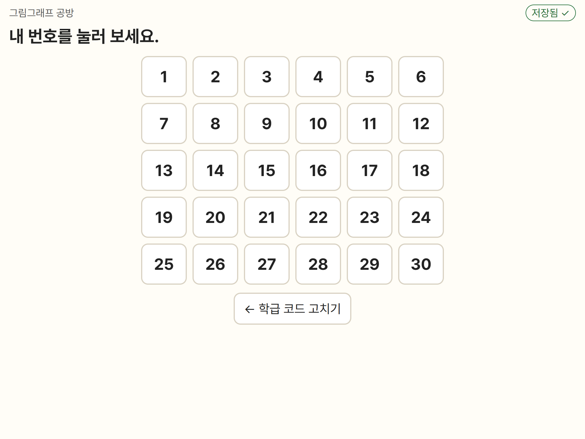
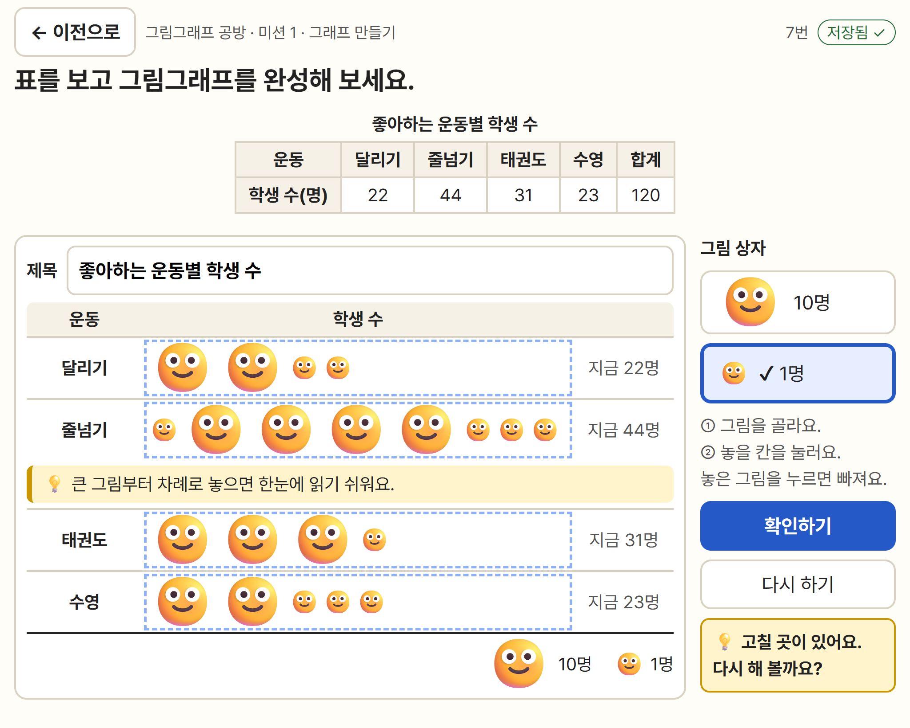
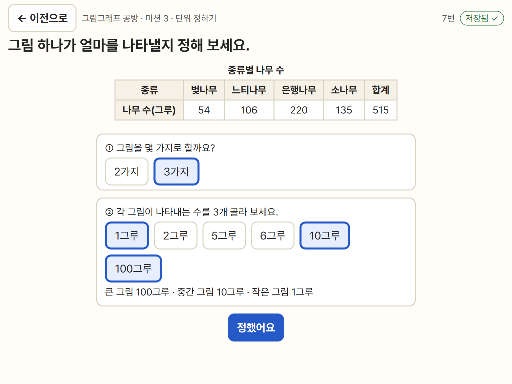
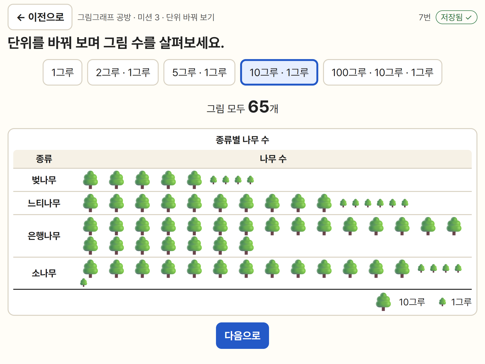
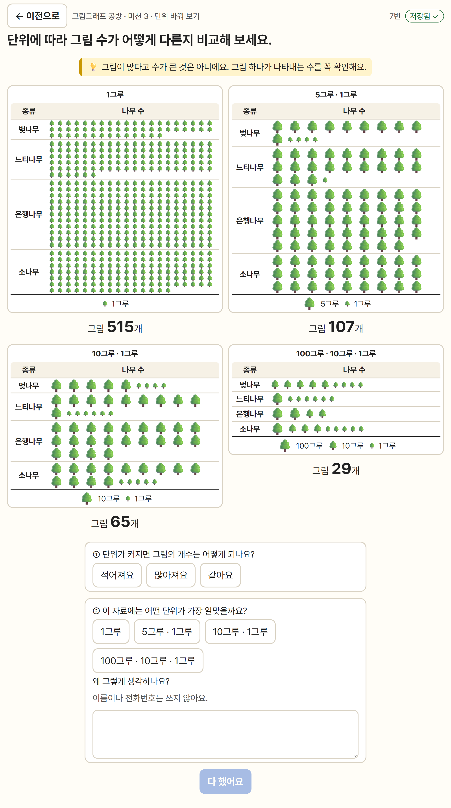
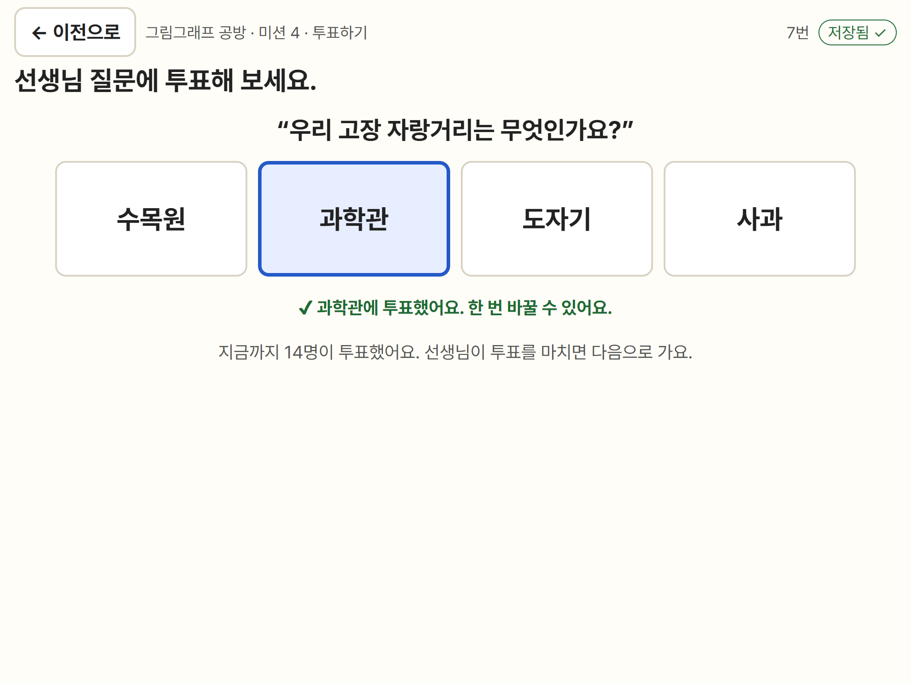
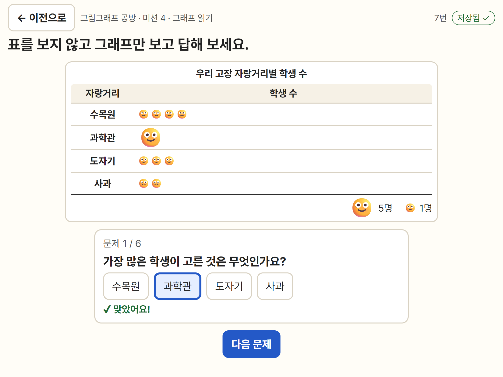
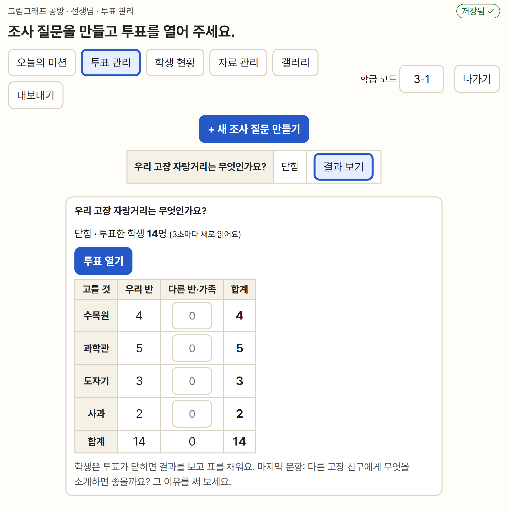
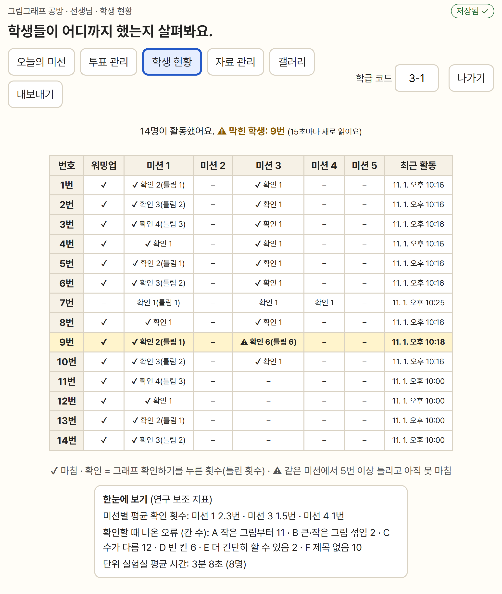

그림그래프 공방
초등학교 3학년 2학기 수학 6단원 「그림그래프」 학습 도구 · 동료 교사 검토 안내
교과서에서 붙임딱지로 하던 그림그래프 만들기를 태블릿으로 옮기고, 종이로는 어려운 즉각적인 피드백, 단위 바꿔 보기, 학급 전자 투표를 더한 웹 도구입니다. 학생이 그림(단위)의 크기와 개수의 관계를 직접 조작하며 익히도록 만들었습니다. 검토해 주셔서 고맙습니다. 15~20분쯤 걸립니다.
'직접 해 보기'는 연습 모드로 열립니다. 검토하며 한 활동은 어디에도 저장되지 않고, 연구 자료에 섞이지 않습니다.
1. 검토 순서
- 아래 2~4번에서 도구의 목적과 미션 구성을 읽어 주세요.
- 직접 해 보기를 눌러 학생처럼 해 봅니다. 학급 코드는 3-1 그대로, 번호는 아무거나 고릅니다.
- 꼭 해 볼 것: 미션 1(만들기판과 피드백), 미션 3(단위 정하기·단위 바꿔 보기). 시간이 되면 워밍업, 미션 4(직접 조사), 미션 5(그래프 탐정)도 해 봐 주세요.
- 일부러 틀려 보세요. 예: 작은 그림부터 놓기, 그림 수를 덜 놓기, 제목 비우기 → 확인하기.
- 교사 기능(전자 투표, 학생 현황 등)은 연습 모드에서 열리지 않으니 5번의 화면 사진으로 봐 주세요.
- 7번 검토 문항(8문항)에 답해 주세요.
2. 교육과정 근거와 설계 원칙
- 성취기준 [4수04-01] 자료를 수집하여 그림그래프나 막대그래프로 나타내고 해석할 수 있다.
- 적용 시 고려 사항: 항목의 이름과 수량의 단위를 분명히 알게 하고, 자료의 개수에 따라 그림이 나타내는 단위를 알맞게 고르게 함.
- 지도서 지도 원칙을 반영함
- 나타내는 순서를 정해 주지 않고, 고려할 점(그림 정하기, 수에 맞게 나타내기, 제목)을 스스로 점검(교과서 자가 점검 3문항)
- 그림의 모양·크기·가짓수·나타내는 수를 학생이 정함
- 그림 2가지와 3가지를 비교해 자료의 수에 따라 가짓수를 고르면 편리함을 앎
- 그림 개수가 많다고 수량이 많은 것은 아님(해석 오개념)을 단위 실험실·워밍업에서 다룸
- 100·10·1 단위만이 아니라 5·2 단위도 비교(단위 개념)
- 지도서의 학생 오류를 피드백 기준으로 씀: A 작은 그림부터, B 큰·작은 그림 섞음, C 조사한 수와 다름, D 항목이 빠짐, E 큰 그림을 덜 써서 복잡함, F 제목 없음. 틀리면 해당 줄에 💡 힌트가 나오고, 정답을 바로 알려 주지는 않습니다.
3. 차시별 쓰임
| 차시 | 교과서 주제 | 도구 |
|---|---|---|
| 2 | ① 그림그래프를 알아봐요 (124~126쪽) | 선택: 워밍업(그림그래프 읽기) |
| 3 | ② 그림그래프로 나타내요 (127~129쪽) | 핵심: 미션 1~3 |
| 4~5 | ③ 자료를 모아서 그림그래프로 나타내고 해석해요 (130~133쪽) | 핵심: 미션 4 (전자 투표 → 표 → 그래프 → 해석) |
| 6 | 함께하는 수학 (환경 신문 만들기) | 선택: 갤러리에서 그래프 그림 파일 내려받기 |
| 7~8 | 해결하는 수학, 문제로 마무리 | 선택: 미션 5 그래프 탐정 |
4. 미션 구성
| 미션 | 학생이 하는 일 | 노리는 점 |
|---|---|---|
| 워밍업 | 완성된 그림그래프를 보고 5문항 답하기 | 그림 하나의 수 읽기, 그림 개수 ≠ 수량 |
| 미션 1 | 표 살펴보기 → 그림 2가지(10명·1명)로 그래프 완성 → 자가 점검 | 수에 맞게 나타내기, 큰 그림부터, 제목 |
| 미션 2 | 같은 자료를 그림 2가지와 3가지로 나타내고 비교 → 알게 된 점 쓰기 | 자료의 수에 따라 그림 가짓수 고르기 |
| 미션 3 | 그림 가짓수와 단위, 모양을 스스로 정해 나타내기 → 단위 바꿔 보기 → 단위별 그래프 나란히 비교 | 자료에 알맞은 단위 고르기, 단위와 그림 수의 관계 |
| 미션 4 | 선생님 질문에 전자 투표(또는 직접 조사) → 표 직접 채우기 → 그래프 → 표 없이 그래프만 보고 해석 | 통계적 문제해결 과정, 자료 읽기·사이 읽기·너머 읽기 |
| 미션 5 | 잘못 나타낸 그래프 4개(오류 A~D)에서 잘못을 찾고, 직접 고치고, 까닭 고르기 | 오류 인식과 수정 |
모든 화면 위쪽에 지금 할 일이 한 문장으로 나오고, 언제든 '← 이전으로'로 돌아갈 수 있습니다. 글은 3학년이 읽기 쉽게 짧게 썼고, 글자 20px·버튼 56px 이상입니다.
5. 화면 미리 보기









6. 교사 기능과 개인정보
- 오늘의 미션: 미션마다 열기·잠그기, '지금 ○명' 도움 켜기, 칭찬 스티커 켜기
- 투표 관리: 조사 질문과 선택지 만들기, 투표 열기·닫기, 실시간 결과, 다른 반·가족 결과 더하기
- 학생 현황: 번호별 진행, 같은 미션에서 5번 이상 틀린 학생 표시, 미션별 평균 확인 횟수·오류 종류 빈도·단위 실험실 사용 시간
- 자료 관리: 새 자료를 만들어 미션 3에서 더 해 보게 하기
- 갤러리: 번호만 보이는 그래프 모음, 칭찬 스티커, 크게 보기(프로젝터), 그림 파일 내려받기
- 내보내기: 연구 분석용 CSV(엑셀에서 한글이 깨지지 않음), 연구가 끝나면 전체 기록 지우기
- 학생은 학급 코드와 번호로만 구분하고 이름·사진·목소리를 받지 않습니다. 기록은 담임교사의 구글 스프레드시트에만 저장되며, 외부 분석 도구나 광고는 없습니다.
7. 검토 문항
1~8번은 5점 척도입니다. ① 전혀 그렇지 않다 ② 그렇지 않다 ③ 보통이다 ④ 그렇다 ⑤ 매우 그렇다
| 번호 | 영역 | 문항 |
|---|---|---|
| 1 | 교육과정 적합성 | 이 도구의 활동은 성취기준 [4수04-01] "자료를 수집하여 그림그래프나 막대그래프로 나타내고 해석할 수 있다"에 알맞다. |
| 2 | 교육과정 적합성 | 그림의 크기·가짓수·나타내는 수를 자료에 맞게 정하는 활동이 교과서와 지도서의 그림그래프 지도 내용에 잘 맞는다. |
| 3 | 학습자 적합성 | 화면의 글과 안내는 초등학교 3학년 학생이 읽고 이해하기에 알맞다. |
| 4 | 학습자 적합성 | 미션의 양과 어려운 정도는 3학년 학생이 수업 시간 안에 해낼 수 있는 수준이다. |
| 5 | 사용 편의성 | 학생이 태블릿에서 그림을 놓고, 빼고, 고치는 조작을 쉽게 할 수 있다. |
| 6 | 사용 편의성 | 교사가 미션 열기·잠그기, 전자 투표, 학생 현황, 내보내기 기능을 수업에서 쉽게 쓸 수 있다. |
| 7 | 학습 효과 | 바로 주는 피드백(💡 힌트)과 '단위 바꿔 보기'는 그림 하나가 나타내는 수(단위)를 이해하는 데 도움이 된다. |
| 8 | 학습 효과 | 이 도구는 학생이 자료를 그림그래프로 나타내고 해석하는 능력을 기르는 데 도움이 된다. |
| 9 | 자유 의견 | 고치면 좋을 점이나 더하면 좋을 기능을 써 주세요. |
설문 주소는 따로 알려 드립니다. 이 페이지를 인쇄해 적어 주셔도 됩니다.